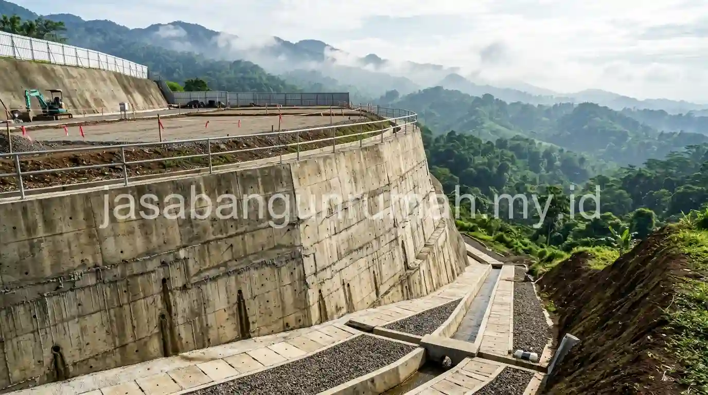

Daftar Isi
Arsitek rumah minimalis Sentul Bogor menangani tantangan lahan berkontur khas kawasan perbukitan melalui konsep split level dan perencanaan dinding penahan tanah, dipadukan dengan penyesuaian desain terhadap curah hujan tinggi di wilayah tersebut.
Apa Tantangan Utama Mendesain Rumah di Lahan Berkontur seperti Sentul?
Lahan di kawasan Sentul banyak yang memiliki permukaan tidak rata dengan kemiringan bervariasi, sehingga pendekatan desain rumah konvensional yang mengasumsikan lahan datar sering tidak dapat diterapkan begitu saja tanpa penyesuaian signifikan pada tahap perencanaan.
Tantangan utama meliputi penentuan level lantai yang tepat agar tidak membutuhkan pekerjaan cut and fill tanah dalam volume besar, perhitungan struktur pondasi yang harus menyesuaikan perbedaan ketinggian permukaan tanah di berbagai titik, serta pengelolaan aliran air hujan yang secara alami mengalir mengikuti kemiringan lahan menuju titik terendah di sekitar bangunan.
Selain aspek struktural, tantangan lain yang sering dihadapi adalah akses jalan menuju lahan yang terkadang juga mengikuti kontur berbukit, sehingga perencanaan carport dan jalur masuk kendaraan perlu mempertimbangkan kemiringan akses tersebut agar tetap nyaman dan aman digunakan sehari-hari, terutama saat kondisi jalan basah akibat hujan.
Bagaimana Konsep Split Level Membantu Menyiasati Kontur Lahan Miring?
Konsep split level membagi bangunan menjadi beberapa level lantai yang mengikuti perbedaan ketinggian alami lahan, sehingga setiap bagian rumah dapat dibangun mengikuti kontur asli tanpa harus meratakan seluruh lahan menjadi satu bidang datar yang membutuhkan biaya besar.
Pendekatan ini memungkinkan area seperti carport atau ruang servis ditempatkan pada level yang lebih rendah mengikuti kontur asli di bagian depan lahan, sementara ruang utama seperti ruang keluarga dan kamar tidur berada pada level yang sedikit lebih tinggi mengikuti kontur di bagian belakang, dihubungkan dengan beberapa anak tangga pendek di antara level-level tersebut.
Selain menghemat biaya pekerjaan tanah dibandingkan meratakan seluruh lahan, konsep split level juga sering menghasilkan tampilan arsitektur yang lebih dinamis dan menarik secara visual, karena permainan level lantai menciptakan dimensi ruang yang berbeda dari rumah dengan lantai datar konvensional pada umumnya. Pendekatan ini banyak diterapkan pada proyek-proyek rumah di kawasan Sentul yang secara alami memiliki karakter lahan berbukit.

Apa yang Perlu Diperhatikan pada Dinding Penahan Tanah di Area Lereng?
Dinding penahan tanah atau retaining wall menjadi elemen penting pada rumah di lahan berkontur untuk mencegah longsor atau pergeseran tanah, terutama pada bagian lahan yang dipotong untuk membentuk level lantai yang lebih rendah dari permukaan tanah asli di sekitarnya.
Perhitungan dimensi dan kekuatan dinding penahan tanah perlu mempertimbangkan tekanan tanah aktif dari sisi lereng, tingkat kemiringan lahan, serta potensi penambahan tekanan akibat air hujan yang meresap ke dalam tanah di belakang dinding tersebut. Tanpa perhitungan yang tepat, dinding penahan tanah berisiko mengalami keretakan atau bahkan kegagalan struktural apabila tekanan tanah dan air yang ditahan melebihi kapasitas desainnya.
Sistem drainase di balik dinding penahan tanah juga menjadi bagian yang tidak kalah penting, karena air yang terperangkap tanpa jalur pembuangan yang memadai dapat meningkatkan tekanan hidrostatis terhadap dinding secara signifikan. Pemasangan pipa drainase kecil yang tertanam di balik dinding penahan tanah membantu mengalirkan air rembesan keluar secara terkendali, sehingga tekanan terhadap struktur dinding dapat tetap berada dalam batas aman.
Selain fungsi struktural, dinding penahan tanah pada rumah minimalis modern juga sering diintegrasikan sebagai elemen desain, misalnya dengan finishing batu alam atau bata ekspos yang menyatu dengan konsep fasad keseluruhan, sehingga elemen yang sebenarnya berfungsi teknis ini tetap dapat tampil estetik dan tidak terkesan seperti struktur tambahan yang terpisah dari desain utama rumah.
Perencanaan menyeluruh antara konsep split level, dinding penahan tanah, dan sistem drainase lereng sebaiknya dilakukan secara terpadu sejak tahap awal oleh arsitek yang memahami karakteristik lahan berkontur, karena kesalahan pada salah satu aspek dapat memengaruhi keseluruhan sistem, misalnya penentuan level lantai yang kurang tepat dapat menyebabkan air hujan justru mengalir ke arah bangunan alih-alih menjauh dari struktur rumah.
Bagi pemilik lahan berkontur di kawasan Sentul Bogor yang ingin mewujudkan rumah minimalis dengan desain yang menyesuaikan karakter tanah sekaligus tahan terhadap curah hujan tinggi, dapat hubungi arsitek rumah minimalis sentul bogor profesional untuk menjadwalkan survey lokasi dan konsultasi desain secara gratis sesuai kondisi kontur lahan Anda.